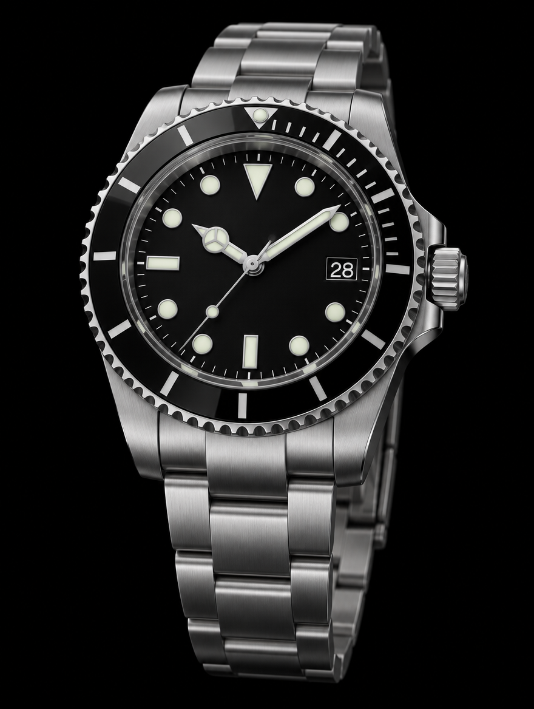

Réf. 126610LN · 2022 · Pièce phare
Rolex Submariner Date
Boîtier acier 904L, lunette céramique noire, complète (boîte et papiers d'origine), révisée par notre atelier.
ÉtatExcellent
Boîte et papiersComplets
Garantie24 mois
12 900 $